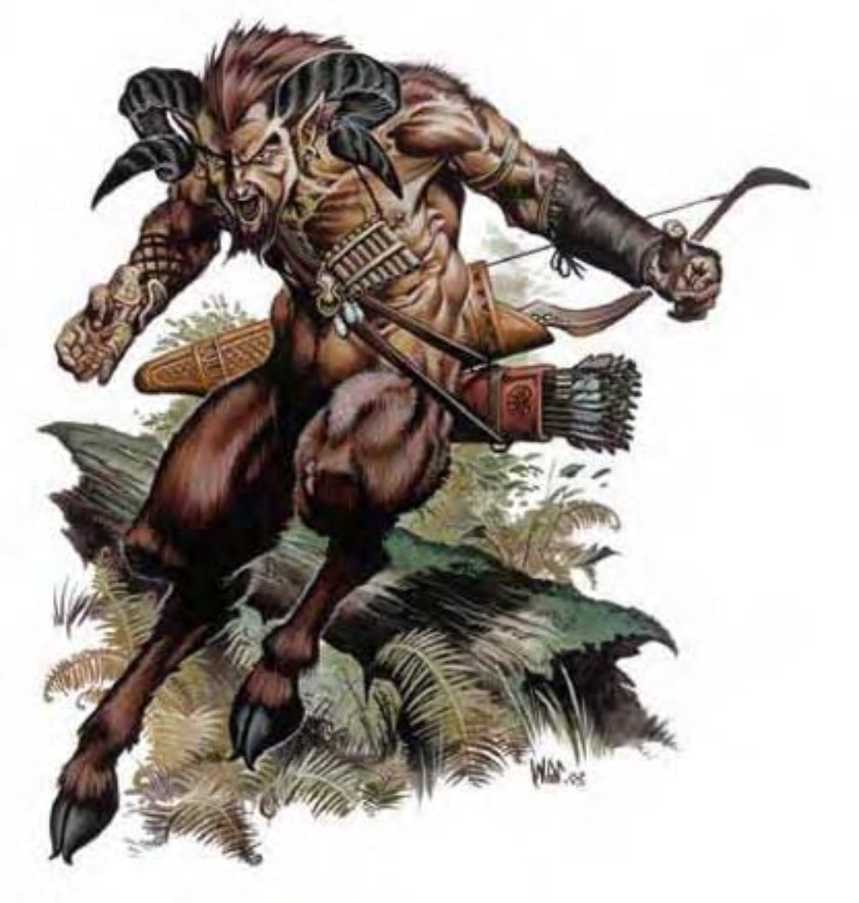

就是长着羊角和羊腿的人。
半羊人也可叫做半人羊，是秉持享乐主义者的生物，在世界各地寻欢作乐。他们喜爱佳肴美酒，以及热情的罗曼史。
半羊人的毛发为红色或栗棕色，羊角和足蹄则为漆黑色。
比起武器，半羊人还宁愿配戴乐器或酒瓶。他们多半不会主动打扰旅行者，但若离他们森林居所太近，付出的代价就是被作弄一番。
半羊人身高体重约与半精灵相同。
半羊人通晓木族语，多半亦通晓通用语。
| 资料栏位 | 半羊人 (Satyr) 中型精类生物 |
| 生命骰 | 5d6+5 (22HP) |
| 先攻 | +1 |
| 速度 | 40英尺 (8格) |
| 防御等级 | 15 (+1敏捷、+4天生)、接触11、措手不及14 |
| 基本攻击/擒抱 | +2 / +2 |
| 攻击 | 头击+2近战 (1d6)；或短弓+3远程 (1d6 / ×3) |
| 全力攻击 | 头击+2近战 (1d6) 及 匕首-3近战 (1d4 / 19-20)；或短弓+3远程 (1d6 / ×3) |
| 占据/触及 | 5英尺 / 5英尺 |
| 特殊攻击 | 乐笙 |
| 特殊能力 | 伤害减免5 / 寒铁、昏暗视觉 |
| 豁免 | 强韧+2、反射+5、意志+5 |
| 属性 | 力量10、敏捷13、体质12、智力12、感知13、魅力13 |
| 技能 | 唬骗+9、交涉+3、易容+1 (扮演+3)、躲藏+13、威吓+3、自然知识+9、聆听+15、潜行+13、表演 (管乐器)+9、侦察+15、生存+1 (+3于地表) |
| 专长 | 警觉B、闪避、灵活移动 |
| 环境 | 温带森林 |
| 组织 | 单独、成双、一团 (3-5) 或部队 (6-11) |
| 宝藏 | 标准 |
| 阵营 | 通常混乱中立 |
| 进化 | 6-10HD (中型) |
| 等级修正值 | +2 |
半羊人的灵敏知觉使他们难以在野外被伏击。反言之，他们天生的轻巧机敏让他们得以轻松潜近对四周环境观察不细心的旅行者。
一旦进入战斗，没有武装的半羊人会使用强力头击。感受到危险的半羊人则会事先装备弓与匕首，并在藏身处先发制人，以期在近身战前先削弱对手。
乐笙 (超自然)：半羊人可用牧神笙吹出各种魔法曲调。一般来说，一群半羊人中只有一位会携带乐笙。当吹奏时，60英尺扩散范围内的非半羊人生物都需进行意志检定 (DC=13)，失败则受到“魅惑人类”、“睡眠术”或“恐惧术”影响 (施法者等级20，半羊人可决定所使用的曲调与效果)。乐笙在其他生物手中则无特殊效果。通过检定的生物在24小时内都不会再受同一组乐笙影响。豁免检定DC的调整值与魅力调整值相同。
半羊人通常会使用乐笙来魅惑引诱美女或是让一队冒险者陷入沉睡，以便窃取财物。
技能：半羊人在进行“躲藏”、“聆听”、“潜行”、“表演”与“侦察”检定时具有+4种族加值。
半羊人人物具有下列种族特性：
― +2敏捷、+2体质、+2智力、+2感知、+2魅力。
― 中型。
― 半羊人的基本行走速度为40英尺。
― 昏暗视觉。
― 种族生命骰：半羊人起始为5级精类生物，生命骰5d8、基本攻击加值+2，强韧、反射与意志的基本豁免检定则分别是+1、+4及+4。
― 种族技能：半羊人的精类生物等级使他的技能点数为8× (6+智力调整值)。本职技能为唬骗、躲藏、自然知识、聆听、潜行、表演与侦察。半羊人在进行“躲藏”、“聆听”、“潜行”、“表演”与“侦察”检定时具有+4种族加值。
― 种族专长：半羊人的精类生物等级具有两个专长，但具有额外专长：“警觉”。
― +4天生防御加值。
― 天生武器：头击 (1d6)。
― 特殊攻击 (见前文)：乐笙。
― 特殊能力 (见前文)：伤害减免5 / 寒铁。
― 母语：木族语。额外语言：通用语、精灵语、侏儒语。
― 适合职业：吟游诗人。
― 等级修正值：+2